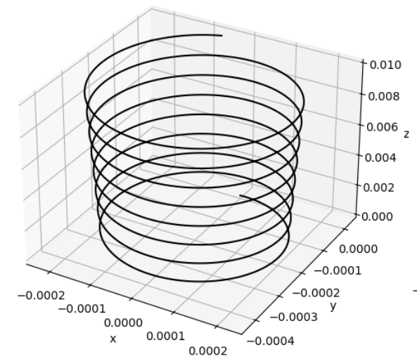
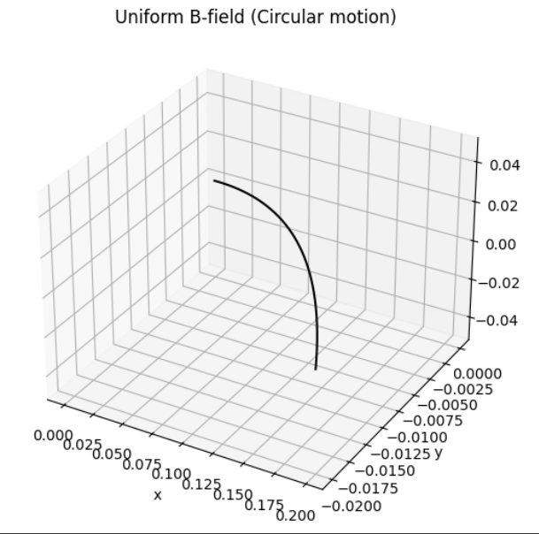
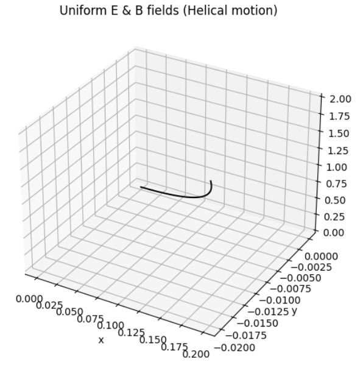
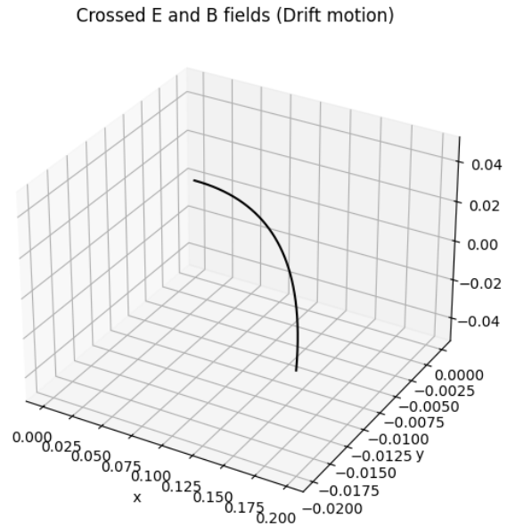
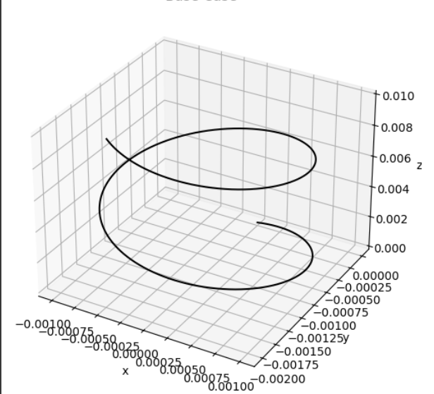
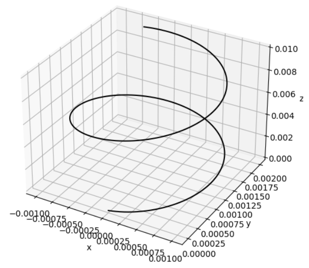

Problem 1
1. Systems Where the Lorentz Force Plays a Key Role
Below are several important systems and devices that critically depend on the Lorentz force:
A. Particle Accelerators
- Basic Principle: Charged particles such as electrons or protons are boosted in energy using electric fields and guided using magnetic fields.
- Function of Lorentz Force:
- \(\vec{F} = q\vec{E}\): The electric field accelerates particles by increasing their speed.
- \(\vec{F} = q\vec{v} \times \vec{B}\): The magnetic component alters the particle's direction, often forcing it into circular or spiral paths.
- Example: In the Large Hadron Collider (LHC), extremely strong magnets direct high-speed protons along curved trajectories.
B. Mass Spectrometry
- Functionality: Differentiates ions based on their ratio of mass to electric charge.
- Role of Lorentz Force:
- As ions move through electric or magnetic fields, they are deflected depending on their charge and velocity.
- The bending of their path reveals data about their mass.
- Important Formula: \(\(r = \frac{mv}{qB}\)\)
- Uses: Identifying unknown chemical substances and isotopes.
C. Plasma Control in Fusion Devices (Tokamaks)
- Operation: Uses magnetic fields to enclose high-temperature plasma within a donut-shaped chamber.
- Effect of Lorentz Force:
- Magnetic fields keep the ionized gas particles from contacting the reactor's inner walls.
- Significance: This containment is necessary for maintaining the conditions needed for nuclear fusion.
D. Cathode Ray Tubes (CRTs)
- Working Mechanism: Beams of electrons are manipulated using fields to form images on a screen.
- Lorentz Force Action:
- Electric fields speed up the electrons.
- Magnetic fields adjust their direction to target different areas of the screen.
E. Astrophysical Interactions (e.g., Solar Wind and Magnetic Fields)
- Scenario: Solar particles interact with magnetic fields of planets (like Earth).
- Influence of Lorentz Force:
- Determines how charged cosmic particles move in space.
- Responsible for phenomena such as auroras and geomagnetic storms.
2. Importance of Electric (\(\vec{E}\)) and Magnetic (\(\vec{B}\)) Fields
Electric Fields (\(\vec{E}\))
- Straight-line Acceleration: Provide energy to particles by pushing them in the field’s direction.
- Effect: Modify the particle’s speed without necessarily altering its direction (in uniform fields).
- Common Uses:
- Launching particles from rest.
- Accelerating charged particles in a straight line.
Magnetic Fields (\(\vec{B}\))
- Curving Paths: Redirect particle motion without increasing speed.
- Motion Type: Cause particles to move in circles or spirals because the force acts at a right angle to the motion.
- Applications:
- Directing and shaping beams in instruments.
- Holding plasma in place inside reactors.

Particle Moving in a Magnetic Field

Interaction of Both Fields
The complete Lorentz force equation is:
This enables complex particle behavior:
- Cross-field Drift: With perpendicular \(\vec{E}\) and \(\vec{B}\) fields, the particle drifts sideways to both.
- Cyclotron Motion: Pure magnetic field causes circular motion.
- Helical Paths: When both fields act together, the particle spirals along the magnetic field lines.



Exploring Key Parameters
Lorentz Force Formula
Where: - \(q\): electric charge - \(m\): mass of the particle - \(\vec{E}\): electric field - \(\vec{B}\): magnetic field - \(\vec{v}\): particle’s velocity
1. Field Magnitudes: \(\vec{E}\) and \(\vec{B}\)
- Electric Field (\(\vec{E}\)):
- Acceleration from this field is: \(\vec{a}_E = \frac{q\vec{E}}{m}\)
-
This results in linear motion along the field direction.
-
Magnetic Field (\(\vec{B}\)):
- Triggers circular or spiral movement if the velocity is not aligned with the field.
- Radius of the circle: \(r = \frac{mv}{|q||\vec{B}|}\)
- Frequency of rotation: \(f = \frac{|q||\vec{B}|}{2\pi m}\)
Observe: - Larger \(B\) compresses the spiral path. - Stronger \(E\) stretches the particle’s path along its field.
2. Initial Velocity \(\vec{v}\)
- When \(\vec{v} \parallel \vec{B}\): Particle proceeds in a straight line.
- When \(\vec{v} \perp \vec{B}\): It moves in a circle.
- When \(\vec{v}\) has both parallel and perpendicular parts: A helix forms.
Try Changing: - Angle of \(\vec{v}\) transitions motion type from straight to circular to spiral.
3. Charge \(q\) and Mass \(m\)
- Charge (\(q\)):
- The direction of force flips if the sign of \(q\) changes.
-
A higher charge boosts the force.
-
Mass (\(m\)):
- Influences acceleration (more mass = more inertia).
- Heavier particles move in wider circles and respond slower.
Investigate: - Compare motion of particles with opposite charge signs. - See how heavier particles rotate more sluggishly and broadly.
Charged Particle Motion Under Electric and Magnetic Influence


Understanding the Larmor Radius and Drift Velocity
1. Larmor (Cyclotron) Radius
This radius describes how far a particle curves when it moves at a right angle to a magnetic field.
Formula:
- \(m\): mass of the particle
- \(v\): speed perpendicular to the magnetic field
- \(q\): electric charge
- \(B\): magnetic field strength
Interpretation:
- Higher \(B\) → Tighter curve.
- Larger \(m\) or \(v\) → Wider curve.
- Indicates the size of the circular/spiral motion in a magnetic field.
2. Drift Velocity
Charged particles also move with a drift velocity when exposed to both electric and magnetic fields, especially in plasmas or conducting materials.
Formula:
- \(\vec{E}\): electric field vector
- \(B\): magnetic field magnitude
Meaning:
- Drift occurs at a right angle to both fields.
- In crossed-field conditions, the spiral path slowly shifts in the electric field’s direction.
Combining Larmor Radius and Drift
- In mixed fields, the motion becomes a helix:
- Circle radius = Larmor radius.
- Entire spiral shifts due to drift velocity.